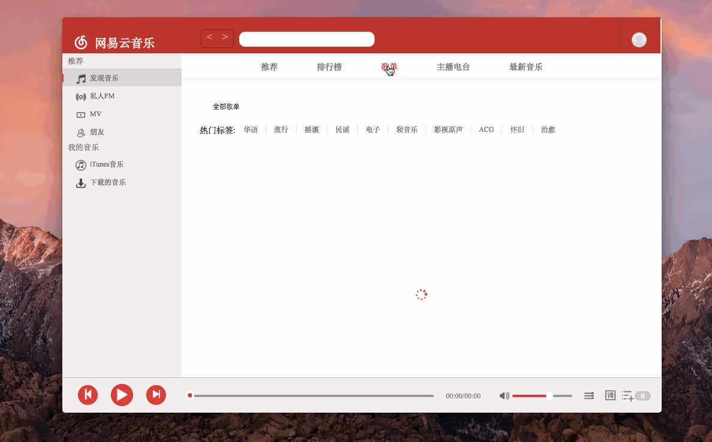
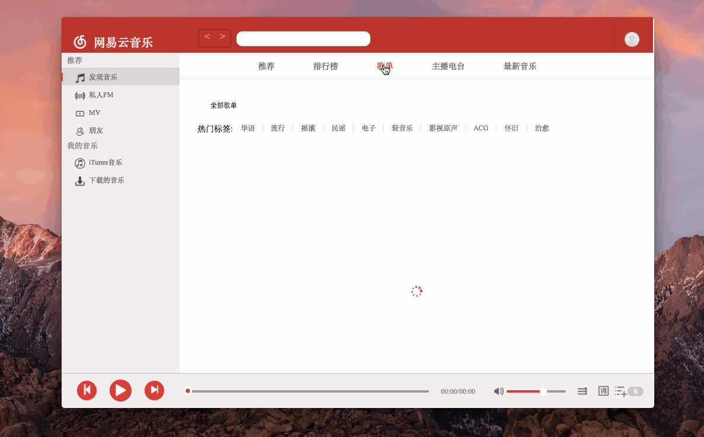

- 就是使用electron 将 react 做的网易云音乐 打了一个包
- 如无法正常启动：下载无删减node modules 版本 百度云链接 密码：xxx
项目展示：
技术栈：Electron ， react ， redux,...
刷了一下Electron 的文档 ， 但是感觉 主进程 的api 没有太多用 （ 可能是项目经验不足。。。🙃 ），除了 ipcMain 和 ipcRenderer 之间让 主进程 监听 前台通信 ，让渲染进程的 UI 控制 主进程 做交互
项目展示：
技术栈：Electron ， react ， redux,...
刷了一下Electron 的文档 ， 但是感觉 主进程 的api 没有太多用 （ 可能是项目经验不足。。。🙃 ），除了 ipcMain 和 ipcRenderer 之间让 主进程 监听 前台通信 ，让渲染进程的 UI 控制 主进程 做交互